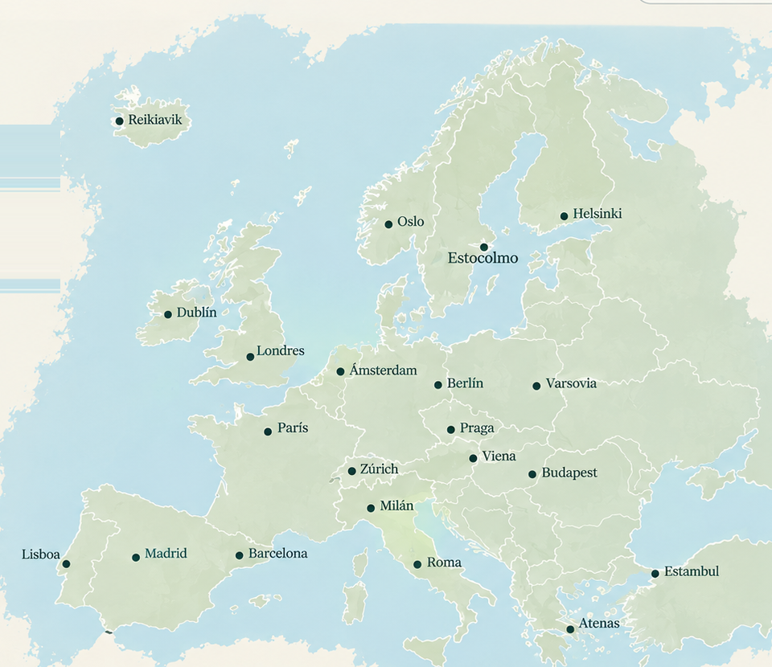

<!doctype html>
<html lang="es">
<head>
<meta charset="utf-8">
<meta name="viewport" content="width=device-width,initial-scale=1">
<title>vacay — Tu viaje, a tu manera</title>
<style>
:root{--cream:#f5f1e8;--paper:#fffdf8;--ink:#17352d;--muted:#68736d;--line:#d9d6cc;--sage:#dce6dc}
*{box-sizing:border-box}body{margin:0;background:var(--cream);color:var(--ink);font-family:Arial,sans-serif}button,input,select{font:inherit}button{cursor:pointer}
.wrap{max-width:1180px;margin:auto;padding:24px 28px 70px}nav{display:flex;justify-content:space-between;align-items:center;margin-bottom:35px}.logo{font-size:28px;font-weight:800;letter-spacing:-1px}.pill{border:1px solid var(--line);background:transparent;border-radius:999px;padding:10px 16px;color:var(--ink)}
.hero{padding:55px 0}.eyebrow{font-size:11px;text-transform:uppercase;letter-spacing:2px;color:var(--muted);margin-bottom:16px}h1,h2,h3{font-family:Georgia,serif;font-weight:500;letter-spacing:-1px}h1{font-size:clamp(50px,8vw,88px);line-height:.94;margin:0 0 22px}h2{font-size:36px;margin:0 0 18px}.lead{font-size:19px;line-height:1.5;color:#58645e;max-width:680px}
.maphero{display:grid;grid-template-columns:40% 60%;min-height:610px;margin:0 -28px 55px;border-block:1px solid var(--line)}.mapcopy{padding:55px 48px;display:flex;flex-direction:column;justify-content:center}.mapbox{padding:25px 25px 25px 0;display:flex;align-items:center}.mapframe{position:relative;width:100%;aspect-ratio:960/830;border-radius:28px;overflow:hidden;background:#dceff1;border:1px solid var(--line);box-shadow:0 20px 45px #17352d18}.mapframe img{width:100%;height:100%;object-fit:contain;display:block}.pin{position:absolute;width:22px;height:22px;border:0;background:transparent;transform:translate(-50%,-50%)}.pin:after{content:'';position:absolute;inset:4px;border-radius:50%;background:var(--ink);border:3px solid white;box-shadow:0 3px 10px #17352d44}.pin:hover:after{transform:scale(1.25)}
.primary{border:0;background:var(--ink);color:white;padding:14px 21px;border-radius:999px;font-weight:700}.panel{background:var(--paper);border:1px solid var(--line);border-radius:24px;padding:25px;margin:16px 0}.grid{display:grid;grid-template-columns:repeat(auto-fill,minmax(210px,1fr));gap:13px}.card{background:var(--paper);border:1px solid var(--line);border-radius:18px;padding:21px}.card button{border:0;background:none;text-align:left;width:100%;color:var(--ink)}.name{font-family:Georgia,serif;font-size:25px}.muted{color:var(--muted);font-size:13px;margin-top:7px}.back{margin:10px 0 25px}.back button{border:0;background:none;color:var(--muted);padding:0}.choices{display:flex;flex-wrap:wrap;gap:9px}.choice{border:1px solid var(--line);background:white;border-radius:999px;padding:10px 14px;color:var(--ink)}.choice.active{background:var(--ink);color:white}.fields{display:grid;grid-template-columns:repeat(4,1fr);gap:12px}.field label{display:block;font-size:11px;text-transform:uppercase;letter-spacing:1px;color:var(--muted);margin-bottom:7px}.field select,.field input{width:100%;padding:12px;border:1px solid var(--line);border-radius:12px;background:white;color:var(--ink)}.wide{width:100%;margin-top:20px}.results{display:grid;gap:9px;margin-top:14px}.result{background:white;border:1px solid var(--line);border-radius:15px;padding:14px;display:flex;justify-content:space-between;gap:10px;align-items:center}.itinerary{display:grid;gap:12px}.day{background:var(--paper);border:1px solid var(--line);border-radius:20px;padding:20px}.daytop{display:flex;justify-content:space-between;align-items:center}.day h3{font-size:27px;margin:0}.save{border:1px solid var(--line);background:white;border-radius:999px;padding:8px 12px}.routeflow{position:relative}.routeflow:before{content:"";position:absolute;left:31px;top:35px;bottom:35px;width:2px;background:var(--line)}.slot{position:relative;display:grid;grid-template-columns:65px 1fr;gap:15px;padding:15px 0;border-top:1px solid var(--line);margin-top:14px}.slot h4{margin:0 0 5px}.slot p{margin:0;color:var(--muted);line-height:1.4}.slottime{position:relative;z-index:1;background:var(--paper);font-weight:700}.route-summary{display:flex;gap:10px;flex-wrap:wrap;margin-top:12px}.route-chip{background:white;border:1px solid var(--line);border-radius:999px;padding:8px 11px;font-size:13px}.notice{background:var(--sage);border-radius:15px;padding:14px;margin-top:14px;color:#355044}.empty{color:var(--muted);padding:25px 0}
@media(max-width:800px){.wrap{padding:18px 16px 50px}.maphero{grid-template-columns:1fr;margin:0 -16px 35px}.mapcopy{padding:40px 22px 25px}.mapbox{padding:0 16px 20px}.fields{grid-template-columns:1fr 1fr}}
</style>
</head>
<body><div id="app"></div>
<script>
const countries={
"España":["Madrid","Barcelona","Sevilla","Granada","San Sebastián","Mallorca","Ibiza","Tenerife"],
"Portugal":["Lisboa","Oporto","Sintra","Algarve","Madeira","Azores"],
"Francia":["París","Niza","Provenza","Lyon","Burdeos","Estrasburgo","Córcega"],
"Italia":["Roma","Venecia","Florencia","Positano","Capri","Milán","Lago di Como","Cinque Terre","Puglia","Sicilia","Cerdeña","Dolomitas"],
"Grecia":["Atenas","Santorini","Mykonos","Creta","Corfú","Rodas","Milos"],
"Reino Unido":["Londres","Edimburgo","Bath","York","Cotswolds","Isla de Skye"],
"Irlanda":["Dublín","Galway","Cork","Killarney","Acantilados de Moher"],
"Islandia":["Reikiavik","Círculo Dorado","Costa Sur","Vík","Akureyri"],
"Noruega":["Oslo","Bergen","Geiranger","Lofoten","Tromsø"],
"Suecia":["Estocolmo","Gotemburgo","Malmö","Laponia sueca"],
"Finlandia":["Helsinki","Rovaniemi","Laponia","Turku"],
"Dinamarca":["Copenhague","Aarhus","Odense"],
"Países Bajos":["Ámsterdam","Róterdam","Utrecht","La Haya","Giethoorn"],
"Bélgica":["Bruselas","Brujas","Gante","Amberes"],
"Alemania":["Berlín","Múnich","Hamburgo","Colonia","Dresde","Selva Negra"],
"Suiza":["Zúrich","Lucerna","Interlaken","Zermatt","Berna","Lauterbrunnen"],
"Austria":["Viena","Salzburgo","Innsbruck","Hallstatt"],
"Chequia":["Praga","Český Krumlov","Brno"],
"Polonia":["Cracovia","Varsovia","Gdansk","Wroclaw","Zakopane"],
"Hungría":["Budapest","Lago Balaton"],
"Croacia":["Dubrovnik","Split","Hvar","Zadar","Rovinj","Plitvice"],
"Montenegro":["Kotor","Budva","Durmitor"],
"Albania":["Tirana","Berat","Gjirokastër","Riviera Albanesa"],
"Malta":["La Valeta","Mdina","Gozo","Comino"],
"Turquía":["Estambul","Capadocia","Antalya","Éfeso","Bodrum"],
"Ucrania":["Kyiv","Leópolis","Odesa"],
"Andorra":["Andorra la Vella","Grandvalira"],
"Liechtenstein":["Vaduz","Malbun"]
};
const pins=[["Reikiavik",14,17,"Islandia"],["Oslo",48,33,"Noruega"],["Estocolmo",59,36,"Suecia"],["Helsinki",70,31,"Finlandia"],["Copenhague",50,43,"Dinamarca"],["Dublín",21,46,"Irlanda"],["Londres",31,52,"Reino Unido"],["Ámsterdam",42,54,"Países Bajos"],["Berlín",55,56,"Alemania"],["Varsovia",67,57,"Polonia"],["París",33,63,"Francia"],["Praga",54,62,"Chequia"],["Zúrich",44,69,"Suiza"],["Viena",59,67,"Austria"],["Budapest",66,69,"Hungría"],["Milán",46,74,"Italia"],["Madrid",16,81,"España"],["Barcelona",29,81,"España"],["Lisboa",7,81,"Portugal"],["Roma",52,83,"Italia"],["Estambul",82,84,"Turquía"],["Atenas",71,92,"Grecia"]];
const moods=["Romántico","Playa","Gastronomía","Aventura","Sin prisas","Cultura"];
const interests=["Playa","Barco","Gastronomía","Cultura","Naturaleza","Atardecer"];
let state={country:"",destination:"",days:3,date:"2026-10-01",stays:[{from:"2026-10-01",to:"",hotel:""}],reservations:[],start:"09:00",end:"22:00",pace:"Equilibrado",company:"Pareja",budget:"Medio",mood:"Sin prisas",interests:["Gastronomía","Atardecer"],avoid:[],style:"Mezcla"};
function esc(s){return String(s).replace(/[&<>"]/g,c=>({"&":"&amp;","<":"&lt;",">":"&gt;",'"':"&quot;"}[c]))}
function shell(c){document.getElementById("app").innerHTML='<div class="wrap"><nav><div class="logo">vacay</div><div><button class="pill" onclick="home()">Europa</button> <button class="pill" onclick="saved()">Mi viaje <span id="count"></span></button></div></nav>'+c+'</div>';updateCount()}
function updateCount(){let a=JSON.parse(localStorage.getItem("vacaySaved")||"[]");let e=document.getElementById("count");if(e)e.textContent=a.length?" ("+a.length+")":""}
function home(){
let p=pins.map(x=>'<button class="pin" title="'+esc(x[0])+'" style="left:'+x[1]+'%;top:'+x[2]+'%" onclick=\'goCountry("'+x[3]+'")\'></button>').join("");
let cards=Object.entries(countries).map(([c,d])=>'<div class="card"><button onclick=\'goCountry("'+c+'")\'><div class="name">'+esc(c)+'</div><div class="muted">'+d.length+' destinos · explorar</div></button></div>').join("");
shell('<section class="maphero"><div class="mapcopy"><div class="eyebrow">Tu próximo destino te espera</div><h1>Europa,<br>a tu manera.</h1><p class="lead">vacay crea viajes personalizados según cómo quieres viajar, no solo según dónde quieres ir.</p><button class="primary" onclick="document.getElementById(\'countries\').scrollIntoView({behavior:\'smooth\'})">Explora Europa →</button><div style="margin-top:35px;font-family:cursive;font-size:25px;transform:rotate(-3deg)">Good places<br>good people ♡</div></div><div class="mapbox"><div class="mapframe">'+p+'</div></div></section><section class="panel"><h2>Tu viaje empieza contigo.</h2><p class="lead">Elige un destino, cuéntanos tu ritmo, compañía, presupuesto e intereses y vacay construye una ruta pensada para ti.</p></section><div id="countries"><div class="eyebrow">Europa · '+Object.keys(countries).length+' países · '+Object.values(countries).flat().length+' destinos</div><h2>Elige un país</h2><div class="grid">'+cards+'</div></div>');
}
function goCountry(c){state.country=c;let cards=countries[c].map(d=>'<div class="card"><button onclick=\'destination("'+c+'","'+d+'")\'><div class="name">'+esc(d)+'</div><div class="muted">Construye tu viaje →</div></button></div>').join("");shell('<div class="back"><button onclick="home()">← Volver a Europa</button></div><div class="hero"><div class="eyebrow">Explora '+esc(c)+'</div><h1>'+esc(c)+'<br>a tu manera.</h1><p class="lead">Selecciona un destino para crear tu perfil de viaje.</p></div><h2>Destinos</h2><div class="grid">'+cards+'</div>')}
function destination(c,d){state={...state,country:c,destination:d,date:state.date||"2026-10-01",stays:state.stays||[{from:state.date||"2026-10-01",to:"",hotel:""}]};render()}
function addStay(){
state.stays=state.stays||[];
let last=state.stays[state.stays.length-1]||{from:state.date,to:"",hotel:""};
state.stays.push({from:last.to||last.from,to:"",hotel:""});
render();
}
function removeStay(i){
if((state.stays||[]).length<=1)return;
state.stays.splice(i,1);render();
}
function updateStay(i,key,value){
state.stays=state.stays||[{from:state.date,to:"",hotel:""}];
state.stays[i][key]=value;
if(i===0&&key==="from")state.date=value;
}
function addReservation(){state.reservations=state.reservations||[];state.reservations.push({date:state.date||"2026-10-01",time:"16:00",duration:60,name:"",place:""});render();}
function removeReservation(i){state.reservations=state.reservations||[];state.reservations.splice(i,1);render();}
function updateReservation(i,key,value){state.reservations=state.reservations||[];if(state.reservations[i])state.reservations[i][key]=value;}
function timeOptionsForReservation(selected){let out="";for(let h=0;h<24;h++)for(let m of [0,30]){let t=String(h).padStart(2,"0")+":"+String(m).padStart(2,"0");out+='<option value="'+t+'" '+(t===selected?"selected":"")+'>'+t+'</option>}return out;}
function reservationOptions(){let out="";for(let m=30;m<=360;m+=30){let h=Math.floor(m/60),min=m%60;out+='<option value="'+m+'">'+(h?h+" h ":"")+(min?min+" min":"")+'</option>}return out;}
function renderReservations(){if(!state.reservations||!state.reservations.length)return '<div class="muted">No has indicado ninguna reserva. Vacay no bloqueará ningún tramo.</div>';return state.reservations.map((r,i)=>'<div class="result" style="display:grid;grid-template-columns:1fr 1fr 1fr 1fr 2fr auto;align-items:end"><div class="field"><label>Día</label><input type="date" value="'+esc(r.date||"")+'" onchange="updateReservation('+i+',\'date\',this.value);render()"></div><div class="field"><label>Hora</label><select onchange="updateReservation('+i+',\'time\',this.value);render()">'+timeOptionsForReservation(r.time||"16:00")+'</select></div><div class="field"><label>Duración</label><select onchange="updateReservation('+i+',\'duration\',Number(this.value));render()">'+reservationOptions().replace('value="'+r.duration+'"','value="'+r.duration+'" selected')+'</select></div><div class="field"><label>Qué tienes reservado</label><input type="text" placeholder="Ej. paseo en barco" value="'+esc(r.name||"")+'" onchange="updateReservation('+i+',\'name\',this.value)"></div><div class="field"><label>Lugar</label><input type="text" placeholder="Ej. Spiaggia Grande" value="'+esc(r.place||"")+'" onchange="updateReservation('+i+',\'place\',this.value)"></div><button class="save" onclick="removeReservation('+i+')">Eliminar</button></div>').join("");}
function renderStays(){
return (state.stays||[]).map((s,i)=>'<div class="result" style="display:grid;grid-template-columns:1fr 1fr 2fr auto;align-items:end"><div class="field"><label>Llegada</label><input type="date" value="'+esc(s.from||"")+'" onchange="updateStay('+i+',\'from\',this.value);render()"></div><div class="field"><label>Salida</label><input type="date" value="'+esc(s.to||"")+'" onchange="updateStay('+i+',\'to\',this.value);render()"></div><div class="field"><label>Hotel o alojamiento</label><input type="text" placeholder="Ej. Hotel Poseidon" value="'+esc(s.hotel||"")+'" onchange="updateStay('+i+',\'hotel\',this.value)"></div>'+(state.stays.length>1?'<button class="save" onclick="removeStay('+i+')">Eliminar</button>':'')+'</div>').join("");
}
function render(){
let mood=moods.map(x=>'<button class="choice '+(state.mood===x?"active":"")+'" onclick=\'state.mood="'+x+'";render()\'> '+x+' </button>').join("");
let ints=interests.map(x=>'<button class="choice '+(state.interests.includes(x)?"active":"")+'" onclick=\'toggleInterest("'+x+'")\'> '+x+' </button>').join("");
let avoids=["Muchas caminatas","Muchas escaleras","Turismo masificado","Madrugar"].map(x=>'<button class="choice '+(state.avoid.includes(x)?"active":"")+'" onclick=\'toggleAvoid("'+x+'")\'> '+x+' </button>').join("");
let styles=["Imprescindibles","Sitios locales","Mezcla"].map(x=>'<button class="choice '+(state.style===x?"active":"")+'" onclick=\'chooseStyle("'+x+'")\'> '+x+' </button>').join("");
let timeOptions="";
for(let h=0;h<24;h++)for(let m of [0,30]){let t=String(h).padStart(2,"0")+":"+String(m).padStart(2,"0");timeOptions+='<option value="'+t+'">'+t+'</option>'}
let examples={Positano:["Paseo por el centro y miradores","Playa y costa","Cena italiana con vistas"],Roma:["Coliseo y centro histórico","Pasta romana","Trastevere al atardecer"],París:["Barrio emblemático","Bistró francés","Paseo nocturno"],Barcelona:["Casco histórico","Tapas y gastronomía","Arquitectura y mar"]};
let ex=(examples[state.destination]||["Descubrir los lugares más representativos","Comer como local","Tarde a tu ritmo","Atardecer y cena"]).map((x,i)=>'<div class="card"><div class="eyebrow">'+(i===0?"Mañana":i===1?"Mediodía":i===2?"Tarde":"Noche")+'</div><div class="name">'+esc(x)+'</div><p class="muted">Experiencia adaptable a tu perfil.</p></div>').join("");
shell('<div class="back"><button onclick=\'goCountry("'+state.country+'")\'>← Volver a '+esc(state.country)+'</button></div><section class="hero" style="padding-bottom:30px"><div class="eyebrow">'+esc(state.country)+' · tu viaje</div><h1>'+esc(state.destination)+',<br>a tu manera.</h1><p class="lead">Dime cuándo vas, a qué hora quieres empezar y terminar y cómo quieres vivirlo. vacay usará todo eso para construir una ruta coherente.</p></section><div class="panel"><h2>1. ¿Qué viaje quieres vivir?</h2><div class="choices">'+mood+'</div></div><div class="panel"><h2>2. Cuéntame cómo viajas</h2><div class="fields"><div class="field"><label>Fecha de llegada</label><input type="date" value="'+state.date+'" onchange="state.date=this.value;render()"></div><div class="field"><label>Días</label><select onchange="state.days=this.value;render()"><option value="1" '+(Number(state.days)===1?"selected":"")+'>1</option><option value="2" '+(Number(state.days)===2?"selected":"")+'>2</option><option value="3" '+(Number(state.days)===3?"selected":"")+'>3</option><option value="4" '+(Number(state.days)===4?"selected":"")+'>4</option><option value="5" '+(Number(state.days)===5?"selected":"")+'>5</option><option value="6" '+(Number(state.days)===6?"selected":"")+'>6</option><option value="7" '+(Number(state.days)===7?"selected":"")+'>7</option></select></div><div class="field"><label>Empiezas</label><select onchange="state.start=this.value;render()">'+timeOptions.replace('value="'+state.start+'"','value="'+state.start+'" selected')+'</select></div><div class="field"><label>Terminas</label><select onchange="state.end=this.value;render()">'+timeOptions.replace('value="'+state.end+'"','value="'+state.end+'" selected')+'</select></div><div class="field"><label>Ritmo</label><select onchange="state.pace=this.value;render()"><option '+(state.pace==="Sin prisas"?"selected":"")+'>Sin prisas</option><option '+(state.pace==="Equilibrado"?"selected":"")+'>Equilibrado</option><option '+(state.pace==="Aprovecharlo todo"?"selected":"")+'>Aprovecharlo todo</option></select></div><div class="field"><label>Con quién</label><select onchange="state.company=this.value;render()"><option '+(state.company==="Pareja"?"selected":"")+'>Pareja</option><option '+(state.company==="Amigos"?"selected":"")+'>Amigos</option><option '+(state.company==="Familia"?"selected":"")+'>Familia</option><option '+(state.company==="Solo"?"selected":"")+'>Solo</option></select></div><div class="field"><label>Presupuesto</label><select onchange="state.budget=this.value;render()"><option '+(state.budget==="Ajustado"?"selected":"")+'>Ajustado</option><option '+(state.budget==="Medio"?"selected":"")+'>Medio</option><option '+(state.budget==="Flexible"?"selected":"")+'>Flexible</option></select></div></div><div style="margin-top:22px"><div class="eyebrow">Alojamientos</div><p class="muted">Puedes indicar uno o varios hoteles. Vacay usará el alojamiento correspondiente a cada tramo del viaje como punto de partida y llegada de la ruta.</p><div class="results">'+renderStays()+'</div><button class="pill" style="margin-top:10px" onclick="addStay()">+ Añadir otro alojamiento</button></div><div style="margin-top:22px"><div class="eyebrow">Reservas y compromisos</div><p class="muted">¿Tienes alguna reserva, excursión, entrada o compromiso que quieras que vacay respete?</p><div class="choices"><button class="choice '+(state.reservations&&state.reservations.length?"active":"")+'" onclick="if(!(state.reservations&&state.reservations.length))addReservation()">Sí, tengo una reserva</button><button class="choice '+(!state.reservations||!state.reservations.length?"active":"")+'" onclick="state.reservations=[];render()">No</button></div>'+(state.reservations&&state.reservations.length?'<div class="results">'+renderReservations()+'</div><button class="pill" style="margin-top:10px" onclick="addReservation()">+ Añadir otra reserva</button>':'')+'</div><div style="margin-top:22px"><div class="eyebrow">Intereses · puedes elegir varios</div><div class="choices">'+ints+'</div></div><div style="margin-top:22px"><div class="eyebrow">¿Qué prefieres evitar? · puedes elegir varios</div><div class="choices">'+avoids+'</div></div><div style="margin-top:22px"><div class="eyebrow">¿Cómo quieres descubrir el destino?</div><div class="choices">'+styles+'</div></div><button class="primary wide" onclick="build()">Crear mi itinerario ✦</button></div><div class="panel"><h2>Experiencias que encajan</h2><div class="grid">'+ex+'</div></div><div class="panel"><h2>⌖ Estoy aquí</h2><p class="lead" style="font-size:16px">Función preparada para usar tu ubicación en HTTPS y mostrarte el punto de interés más cercano.</p><button class="primary" onclick="locate()">Usar mi ubicación</button><div id="loc"></div></div><div id="route"></div>');
}function toggleInterest(x){state.interests=state.interests.includes(x)?state.interests.filter(a=>a!==x):state.interests.concat(x);render()} function toggleAvoid(x){state.avoid=state.avoid.includes(x)?state.avoid.filter(a=>a!==x):state.avoid.concat(x);render()} function chooseStyle(x){state.style=x;render()}
function reservationWindowsForDate(date){return (state.reservations||[]).filter(r=>r.date===date).map(r=>{let p=(r.time||"00:00").split(":").map(Number),start=p[0]*60+p[1],end=start+Number(r.duration||0);return {start,end,name:r.name||"Reserva",place:r.place||""};}).sort((a,b)=>a.start-b.start);}
function pushPastReservations(date,target,duration){let windows=reservationWindowsForDate(date);for(let pass=0;pass<windows.length+1;pass++){let moved=false;for(let r of windows){if(target<r.end&&target+duration>r.start){target=r.end;moved=true;}}if(!moved)break;}return target;}
function build(){
let n=Math.max(1,Math.min(7,Number(state.days)||3));
const pools={
"Roma":[
["Coliseo","Cultura","Imprescindibles","Centro",75,["09:00","19:00"]],
["Foro Romano y Palatino","Cultura","Imprescindibles","Centro",120,["09:00","19:00"]],
["Pasta romana en Trastevere","Gastronomía","Sitios locales","Trastevere",90,["12:00","23:00"]],
["Trastevere al atardecer","Atardecer","Sitios locales","Trastevere",75,["16:00","22:00"]],
["Villa Borghese","Naturaleza","Mezcla","Centro",90,["07:00","20:00"]],
["Fontana di Trevi","Cultura","Imprescindibles","Centro",35,["00:00","23:59"]]
],
"Positano":[
["Piazza dei Mulini","Cultura","Imprescindibles","Centro",20,["00:00","23:59"],null,"Punto de partida natural para recorrer el centro."],
["Via dei Mulini","Cultura","Sitios locales","Centro",30,["00:00","23:59"],5,"Calle peatonal del centro con tiendas y talleres."],
["Chiesa di Santa Maria Assunta","Cultura","Imprescindibles","Centro",30,["08:00","20:00"],5,"La iglesia y su característica cúpula de mayólica."],
["MAR Positano · Museo Archeologico Romano","Cultura","Imprescindibles","Centro",45,["09:00","20:00"],3,"Villa romana bajo la iglesia; horario de temporada: 09:00–20:00 entre abril y octubre y 10:00–16:00 del 1 de noviembre al 10 de abril."],
["Spiaggia Grande","Playa","Imprescindibles","Costa",75,["00:00","23:59"],5,"La playa principal y el frente marítimo de Positano."],
["Via Positanesi d'America + Torre Trasita","Atardecer","Sitios locales","Costa",25,["00:00","23:59"],8,"Paseo costero hacia Fornillo junto a la Torre Trasita."],
["Spiaggia di Fornillo","Playa","Sitios locales","Costa",120,["00:00","23:59"],8,"Playa más tranquila para baño y descanso."],
["Paseo en barco desde Spiaggia Grande","Barco","Imprescindibles","Costa",120,["09:00","19:00"],0,"Actividad marítima que requiere elegir una salida concreta; se deja como bloque de experiencia."],
["Cena junto a Spiaggia Grande","Gastronomía","Mezcla","Costa",90,["18:00","23:00"],3,"Bloque de cena junto a la playa principal; restaurantes concretos se añadirán después."]
],
"París":[
["Torre Eiffel y Trocadéro","Cultura","Imprescindibles","Centro",90,["09:00","23:00"],null,"Zona monumental y miradores."],
["Louvre","Cultura","Imprescindibles","Centro",150,["09:00","18:00"],null,"Museo; el horario concreto se verificará por fecha en una siguiente fase."],
["Le Marais","Cultura","Sitios locales","Marais",90,["10:00","22:00"],null,"Barrio histórico para recorrer a pie."],
["Montmartre","Cultura","Sitios locales","Montmartre",120,["09:00","23:00"],null,"Barrio de Montmartre y Sacré-Cœur."],
["Paseo por el Sena","Atardecer","Mezcla","Centro",75,["16:00","23:00"],null,"Paseo junto al Sena."],
["Bistró francés","Gastronomía","Mezcla","Centro",90,["12:00","23:00"],null,"Bloque gastronómico; restaurantes concretos se añadirán después."]
],
"Barcelona":[
["Sagrada Família","Cultura","Imprescindibles","Centro",90,["09:00","20:00"],null,"Visita monumental."],
["Barrio Gótico","Cultura","Imprescindibles","Centro",90,["00:00","23:59"],null,"Recorrido por el casco histórico."],
["El Born","Gastronomía","Sitios locales","Centro",90,["10:00","23:00"],null,"Barrio para combinar paseo y ambiente local."],
["Park Güell","Naturaleza","Imprescindibles","Gràcia",120,["09:30","20:00"],null,"Parque y arquitectura."],
["Barceloneta","Playa","Mezcla","Mar",120,["00:00","23:59"],null,"Frente marítimo y playa."],
["Atardecer frente al mar","Atardecer","Mezcla","Mar",75,["17:00","23:00"],null,"Bloque para terminar el día junto al mar."]
]};
const generic=[
["Centro histórico","Cultura","Imprescindibles","Centro",90,["09:00","20:00"],null,"Recorrido por los principales puntos del centro."],
["Barrio local","Cultura","Sitios locales","Centro",90,["10:00","22:00"],null,"Zona para conocer el ambiente local."],
["Experiencia gastronómica","Gastronomía","Mezcla","Centro",90,["12:00","23:00"],null,"Bloque gastronómico."],
["Naturaleza","Naturaleza","Sitios locales","Exterior",90,["08:00","20:00"],null,"Espacio exterior."],
["Atardecer","Atardecer","Mezcla","Centro",75,["16:00","23:00"],null,"Punto para el final de la tarde."]
];
let pool=pools[state.destination]||generic;
let geo={
"Roma":{
"Coliseo":[41.8902,12.4922],"Foro Romano y Palatino":[41.8925,12.4853],"Pasta romana en Trastevere":[41.8897,12.4690],"Trastevere al atardecer":[41.8897,12.4690],"Villa Borghese":[41.9142,12.4922],"Fontana di Trevi":[41.9009,12.4833]
},
"Positano":{
"Piazza dei Mulini":[40.6281,14.4849],"Via dei Mulini":[40.6283,14.4851],"Chiesa di Santa Maria Assunta":[40.6281,14.4852],"MAR Positano · Museo Archeologico Romano":[40.6281,14.4852],"Spiaggia Grande":[40.6267,14.4870],"Via Positanesi d'America + Torre Trasita":[40.6257,14.4878],"Spiaggia di Fornillo":[40.6260,14.4804],"Paseo en barco desde Spiaggia Grande":[40.6267,14.4870],"Cena junto a Spiaggia Grande":[40.6267,14.4870]
},
"París":{
"Torre Eiffel y Trocadéro":[48.8584,2.2945],"Louvre":[48.8606,2.3376],"Le Marais":[48.8566,2.3622],"Montmartre":[48.8867,2.3431],"Paseo por el Sena":[48.8566,2.3522],"Bistró francés":[48.8566,2.3522]
},
"Barcelona":{
"Sagrada Família":[41.4036,2.1744],"Barrio Gótico":[41.3839,2.1760],"El Born":[41.3867,2.1830],"Park Güell":[41.4145,2.1527],"Barceloneta":[41.3809,2.1892],"Atardecer frente al mar":[41.3780,2.1920]
}};
function distanceKm(a,b){
if(!a||!b)return null;
let R=6371,lat1=a[0]*Math.PI/180,lat2=b[0]*Math.PI/180,dLat=(b[0]-a[0])*Math.PI/180,dLon=(b[1]-a[1])*Math.PI/180;
let h=Math.sin(dLat/2)**2+Math.cos(lat1)*Math.cos(lat2)*Math.sin(dLon/2)**2;
return 2*R*Math.asin(Math.sqrt(h));
}
function routeOrder(items,destination){
let points=geo[destination]||{};
let withGeo=items.filter(x=>points[x[0]]);
if(withGeo.length<2)return items;
let remaining=withGeo.slice(),ordered=[];
ordered.push(remaining.shift());
while(remaining.length){
let last=points[ordered[ordered.length-1][0]];
let bestIndex=0,best=Infinity;
remaining.forEach((x,i)=>{let d=distanceKm(last,points[x[0]]);if(d<best){best=d;bestIndex=i;}});
ordered.push(remaining.splice(bestIndex,1)[0]);
}
let noGeo=items.filter(x=>!points[x[0]]);
return ordered.concat(noGeo);
}
function walkMinutes(from,to,destination){
if(!from||!to)return 0;
let points=geo[destination]||{};
let km=distanceKm(points[from],points[to]);
if(km===null)return 0;
let factor=destination==="Positano"?18:12;
return Math.max(3,Math.round(km*factor));
}


let dateBase=new Date((state.date||"2026-10-01")+"T12:00:00");
if(Number.isNaN(dateBase.getTime()))dateBase=new Date("2026-10-01T12:00:00");
let toMin=t=>{let p=t.split(":").map(Number);return p[0]*60+p[1]};
let fmt=m=>String(Math.floor((m%1440+1440)%1440/60)).padStart(2,"0")+":"+String((m%60+60)%60).padStart(2,"0");
let dateKey=d=>d.toISOString().slice(0,10);
let dayName=d=>d.toLocaleDateString("es-ES",{weekday:"long",day:"numeric",month:"long"});
let openAt=(item,minute)=>{
let o=toMin(item[5][0]),cl=toMin(item[5][1]);
if(cl===1439)cl=1440;
let end=minute+item[4];
return minute>=o&&end<=cl;
};
let score=item=>{
let s=0;
if(state.interests.includes(item[1]))s+=6;
if(state.style===item[2])s+=4;
if(state.style==="Mezcla"&&item[2]==="Mezcla")s+=4;
if(state.mood===item[1])s+=4;
if(state.mood==="Cultura"&&item[1]==="Cultura")s+=4;
if(state.mood==="Playa"&&item[1]==="Playa")s+=4;
if(state.mood==="Gastronomía"&&item[1]==="Gastronomía")s+=4;
if(state.mood==="Romántico"&&item[1]==="Atardecer")s+=4;
if(state.mood==="Aventura"&&(item[1]==="Naturaleza"||item[1]==="Barco"))s+=4;
if(state.avoid.includes("Muchas caminatas")&&item[3]==="Centro")s+=2;
if(state.avoid.includes("Muchas escaleras")&&/Montmartre|Fornillo/i.test(item[0]))s-=8;
return s;
};

let candidates=pool.filter(item=>!state.avoid.includes("Muchas escaleras")||!/(Montmartre|Fornillo)/i.test(item[0]));
candidates=candidates.map((x,i)=>({x,i,s:score(x)})).sort((a,b)=>b.s-a.s||a.i-b.i);
if(state.style==="Imprescindibles")candidates.sort((a,b)=>(b.x[2]==="Imprescindibles")-(a.x[2]==="Imprescindibles")||b.s-a.s);
if(state.style==="Sitios locales")candidates.sort((a,b)=>(b.x[2]==="Sitios locales")-(a.x[2]==="Sitios locales")||b.s-a.s);

// No fijamos un número de actividades por día ni para todo el viaje.
// La selección depende de las preferencias; después el horario disponible decide cuántas caben.
let selected=candidates.map(a=>a.x);
if(state.style==="Mucho tiempo libre"){
  selected=selected.filter(x=>x[2]!=="Imprescindibles"||state.interests.includes(x[1])||state.mood===x[1]);
}

// Convertimos la selección en una secuencia geográfica cuando el destino tiene coordenadas.
selected=routeOrder(selected,state.destination);

let start=toMin(state.start||"09:00"), finish=toMin(state.end||"22:00");
if(finish<=start)finish+=1440;
let available=finish-start;
let days=[];
let stays=state.stays||[{from:state.date||"2026-10-01",to:"",hotel:""}];
let stayForDay=d=>{
let current=new Date(dateBase);current.setDate(dateBase.getDate()+d);
let key=dateKey(current);
let found=stays.find(s=>s.hotel&&s.from&&key>=s.from&&(!s.to||key<=s.to));
return found||stays[Math.min(d,stays.length-1)]||stays[0];
};
let chunks=Array.from({length:n},()=>[]);
let remaining=selected.slice();
let scheduledNames=new Set();

// El número de actividades NO se reparte artificialmente.
// Cada día se rellena solo con lo que realmente cabe entre la hora de inicio y fin.
// Se elige la siguiente actividad por cercanía geográfica + encaje horario + preferencias.
for(let d=0;d<n;d++){
  let dayDate=new Date(dateBase);
  dayDate.setDate(dateBase.getDate()+d);
  let activeStay=stayForDay(d);
  let dayItems=[];
  let cursor=start;
  let previous=null;

  while(remaining.length){
    let options=[];
    for(let i=0;i<remaining.length;i++){
      let item=remaining[i];
      let travel=previous?walkMinutes(previous[0],item[0],state.destination):0;
      if(state.avoid.includes("Muchas caminatas"))travel=Math.min(travel,7);

      let earliest=toMin(item[5][0]);
      let target=Math.max(cursor+travel,earliest);
      if(state.avoid.includes("Madrugar")&&target<start+45)target=start+45;
      if(state.avoid.includes("Turismo masificado")&&target<start+60)target=start+60;

      if(target+item[4]>finish)continue;
      if(!openAt(item,target))continue;

      let distanceScore=previous?walkMinutes(previous[0],item[0],state.destination):0;
      let preferenceScore=score(item);
      // Primero respetamos que quepa en el día; después priorizamos preferencias y cercanía.
      options.push({i,item,target,travel,rank:preferenceScore*10-distanceScore});
    }

    if(!options.length)break;

    options.sort((a,b)=>b.rank-a.rank);
    let pick=options[0];

    dayItems.push({
      item:pick.item,
      start:pick.target,
      travel:pick.travel,
      from:previous?previous[0]:"Alojamiento"
    });

    scheduledNames.add(pick.item[0]);
    cursor=pick.target+pick.item[4];
    previous=pick.item;
    remaining.splice(pick.i,1);
  }

  days.push({
    date:dayDate,
    items:dayItems,
    used:cursor-start,
    hotel:activeStay
  });
}

// Si quedan actividades porque un día no podía admitirlas por horario,
// se intenta colocarlas en los días siguientes sin duplicarlas.
for(let item of remaining.slice()){
  for(let d=0;d<n;d++){
    let day=days[d];
    let previous=day.items.length?day.items[day.items.length-1].item:null;
    let cursor=day.items.length?day.items[day.items.length-1].start+day.items[day.items.length-1].item[4]:start;
    let travel=previous?walkMinutes(previous[0],item[0],state.destination):0;
    if(state.avoid.includes("Muchas caminatas"))travel=Math.min(travel,7);
    let target=Math.max(cursor+travel,toMin(item[5][0]));
    target=pushPastReservations(dateKey(dayDate),target,item[4]);
    if(target+item[4]<=finish&&openAt(item,target)){
      day.items.push({item,start:target,travel,from:previous?previous[0]:"Alojamiento"});
      scheduledNames.add(item[0]);
      remaining=remaining.filter(x=>x[0]!==item[0]);
      break;
    }
  }
}

let routeHtml=days.map((day,di)=>{
let totalWalk=day.items.reduce((sum,x)=>sum+(x.travel||0),0);
let totalVisit=day.items.reduce((sum,x)=>sum+x.item[4],0);
let blocks=day.items.map((x,j)=>{
let item=x.item;
let note="";
if(state.interests.includes(item[1]))note+="Elegido por tu interés en "+item[1].toLowerCase()+". ";
if(state.style===item[2]||state.style==="Mezcla"&&item[2]==="Mezcla")note+="Encaja con tu forma de descubrir el destino. ";
if(state.avoid.includes("Muchas caminatas"))note+="Se ha limitado el desplazamiento a pie. ";
if(state.avoid.includes("Turismo masificado"))note+="Se han desplazado las visitas hacia horas posteriores cuando el horario lo permite. ";
return '<div class="slot"><div class="slottime">'+fmt(x.start)+'</div><div><h4>'+esc(item[0])+'</h4><p><b>'+item[4]+' min</b> de visita'+(x.travel?' · ↓ '+x.travel+' min andando':'')+(x.from&&x.from!=="Alojamiento"?' desde '+esc(x.from):' desde el alojamiento')+'</p><p style="margin-top:5px">'+esc(item[7])+'</p>'+(note?'<p style="margin-top:5px;color:#355044">'+esc(note)+'</p>':'')+(item[0].startsWith("MAR Positano")?'<p style="margin-top:5px;font-size:12px;color:#68736d">Horario usado en el plan: 09:00–20:00 de abril a octubre; 10:00–16:00 del 1 de noviembre al 10 de abril.</p>':'')+'</div></div>';
}).join("");
let free=Math.max(0,finish-(day.items.length?day.items[day.items.length-1].start+day.items[day.items.length-1].item[4]:start));
let freeText=free>=60?'<div class="notice" style="margin-top:12px"><b>Tiempo libre:</b> '+Math.floor(free/60)+' h'+(free%60?' '+(free%60)+' min':'')+' para descansar, playa, compras o improvisar.</div>':'';
return '<article class="day"><div class="daytop"><h3>Día '+(di+1)+' · '+esc(dayName(day.date))+'</h3><button class="save" onclick="saveDay('+(di+1)+')">♡ Guardar</button></div><div class="route-summary"><span class="route-chip">🏨 '+esc((day.hotel||{}).hotel||"Alojamiento no indicado")+'</span><span class="route-chip">'+day.items.length+' paradas</span><span class="route-chip">'+totalVisit+' min de visita</span><span class="route-chip">≈ '+totalWalk+' min andando</span></div><div class="routeflow"><div class="route-chip" style="display:inline-block;margin-top:12px">Salida desde alojamiento · '+esc((day.hotel||{}).hotel||"indicado por ti")+'</div>'+blocks+'<div class="route-chip" style="display:inline-block;margin-top:8px">Regreso hacia alojamiento</div></div></article>';
}).join("");
let explanation='Hemos usado tus respuestas para construir una secuencia geográfica: preferencias, horarios y, cuando hay datos disponibles, proximidad real entre lugares. Cada día se separa en una zona lógica para reducir desplazamientos innecesarios.';

document.getElementById("route").innerHTML='<div class="panel"><h2>Tu ruta personalizada</h2><div class="notice"><b>Así funciona esta ruta:</b> '+esc(explanation)+'<br><span style="font-size:13px">Cuando el destino tiene coordenadas, la ruta ordena las paradas por proximidad y calcula un tiempo andando aproximado entre ellas. El alojamiento todavía necesita una dirección/coordenadas para convertirse en el punto geográfico exacto de salida y regreso.</span></div><div class="itinerary" style="margin-top:15px">'+routeHtml+'</div></div>';
document.getElementById("route").scrollIntoView({behavior:"smooth"});
}
function saveDay(i){let a=JSON.parse(localStorage.getItem("vacaySaved")||"[]");let k=state.destination+"-"+i;if(!a.some(x=>x.key===k))a.push({key:k,destination:state.destination,day:i});localStorage.setItem("vacaySaved",JSON.stringify(a));updateCount();alert("Día guardado en Mi viaje ✦")}
function saved(){let a=JSON.parse(localStorage.getItem("vacaySaved")||"[]");shell('<div class="back"><button onclick="home()">← Volver a Europa</button></div><section class="hero"><div class="eyebrow">Tu viaje</div><h1>Mi viaje.</h1><p class="lead">Aquí guardas los días que quieres conservar.</p></section>'+(a.length?a.map(x=>'<div class="panel"><h2>'+esc(x.destination)+' · Día '+x.day+'</h2><p class="muted">Guardado en tu viaje ✦</p></div>').join(""):'<div class="empty">Todavía no has guardado ningún día.</div>'))}
function locate(){let e=document.getElementById("loc");if(!e)return;if(!navigator.geolocation){e.innerHTML='<div class="notice">Tu navegador no permite geolocalización.</div>';return}e.innerHTML='<div class="notice"><b>Buscando tu ubicación…</b><br>Permite el acceso cuando el navegador lo solicite.</div>';navigator.geolocation.getCurrentPosition(()=>{e.innerHTML='<div class="notice"><b>¡Ubicación recibida!</b><br>La siguiente fase conectará tu posición con la base de lugares cercanos de '+esc(state.destination)+'.</div>'},()=>{e.innerHTML='<div class="notice"><b>No se pudo obtener la ubicación.</b><br>Comprueba el permiso del navegador.</div>'},{enableHighAccuracy:true,timeout:8000})}
home();
</script>
</body>
</html>